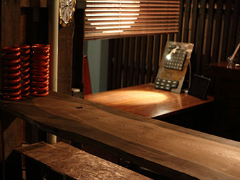

アクセス
車に関するどんな作業でもぜひ一度お問い合わせください
スタッフ一同お待ちしております
所在地
郵便番号 334-0061 埼玉県川口市新堀(にいほり)1155‐2
ロヂャース川口店の隣の小道を入った所です
（一部カーナビでは違う場所が表示されることがあります。ロヂャース川口店を目印にお越しください）
お車の場合：首都高速川口線 新郷ICから約10分
電車の場合：東武スカイツリーライン 草加駅から川口駅行新堀経由バスで 新堀バス停下車すぐ
営業時間・定休日

営業時間：10:00 〜 20:00
定休日：毎週火曜日
その他、レースおよび走行会参加のためお休みを頂くことがあります